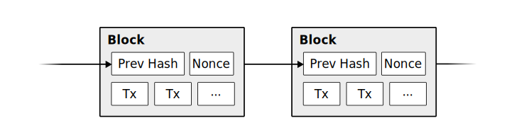
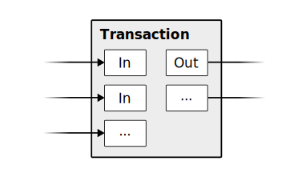
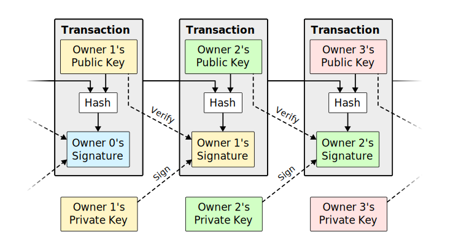

Blockchain Data Structures
Darren Wurf
Introduction
So I had some questions...
- What are blockchains?
- What makes them different?
- How do they work?
Something to do with cryptocurrency?
Introduction
So I had some questions...
- What are blockchains?
- What makes them different?
- How do they work?
Blockchain
A blockchain is a shared ledger where each new block of transactions is signed with a Nakamoto signature.
Two concepts: Shared ledger, and Nakamoto signature
Shared ledger

The shared ledger can be seen as a series of blocks, each of which is presented for signing when it is created. Each block consists of a set of transactions, and each block is built on the previous blocks.
Each block changes the state of the accounts by moving money around. We can create the next block by filling it with transactions, and signing it with a Nakamoto signature.
I considered these other explanations as well, taken from the SALT whitepaper: 1. Executive view: A blockchain is a shared decentralized ledger, enabling business disintermediation and trustless interactions, thereby lowering transaction costs 2. The IT architect and data management view: A blockchain is a shared append-only distributed database with full replication and a cryptographic transaction permissioning model. 3. The blockchain developers and technology view: A blockchain is a peer-to-peer protocol for trust-less execution and recording of transactions secured by asymmetric cryptography in a consistent and immutable chain of blocks.
Nakamoto signature

A Nakamoto signature is a device to allow a group to agree on a shared document. To eliminate the potential for inconsistencies (disagreement), the group engages in a lottery to pick one person's version as the one true document.
The lottery is effected by all members of the group racing to create the longest hash over their copy of the document. The longest hash wins the prize and also becomes a verifiable 'token' of the one true document for members of the group: the Nakamoto signature.
The "longest hash" explanation didn't make sense until I realised they meant the hash of each block joined together.
Darren's interpretation ¯\_(ツ)_/¯
Blockchains provide a timestamped ledger with shared-write capability to entities who do not trust each other.
Questions
So I had some questions...
- What are blockchains?
- What makes them different?
- How do they work?
Is it a database? Maybe I should compare blockchains to a database
Compared to traditional databases
Properties of blockchains:
- Distributed
- Secure
- Append-only
- Eventually consistent
- Support for cryptographic controls down to the individual record level
- Participants can publish cryptographic proofs
- Network rules prevent misbehaviour, such as double spending
- Published blocks can't be modified
- Log-structured, immutable, append-only, peer-to-peer
- ACID compliant? No: see SALT
- CAP theorem: Available and Partition Tolerant - eventually consistent - miners vote using Proof of Work
Compared to traditional databases
Downsides of blockchains
- Cost
- Latency
- Throughput
- Very high cost per transaction (power consumption / specialised compute)
- Dependent on expensive consensus tools, e.g. through Proof of Work (mining)
- Very high latency for transaction confirmation (e.g. 6 blocks / 1hr)
- Low capacity and throughput * Bitcoin is limited to 1MB every 10 minutes, averaging about 7 transactions per second
- Requires incentives to sustain the network, e.g. block reward
Questions
So I had some questions...
- What are blockchains?
- What makes them different?
- How do they work?
Maybe looking at the data structures will help me understand
The data structures
- Chain
- Blocks
- Mempool
- Transactions
- Merkle trees
The chain
- Each block contains the hash of the previous block
- Blocks contain a header and some transaction data.
The chain
- Miners increment the nonce to change the hash of the current block
- A block is published once a hash is found that meets the difficulty threshold
- For example, if the difficulty is 0x00001b... the miners must find a hash with lower starting bits
The block
Bitcoin block structure
version | hashPrevBlock | hashMerkleRoot | nTime | nBits | nNonce |
tx0 (coinbase) | tx1..n | ||||
The first transaction is called the coinbase and is allowed to create new bitcoin.
// Bitcoin block header int32_t nVersion; // Block version char[32] hashPrevBlock; // sha256 char[32] hashMerkleRoot; // sha256 uint32_t nTime; // Unix timestamp uint32_t nBits; // Difficulty target uint32_t nNonce; // Increment nonce to "mine" (change the hash)
- Merkle trees: A kind of "cryptographic summary" of the data in the block.
They allow us to hash only the headers.
The mempool

- Participant signs transaction and broadcasts it to nodes
- Transaction sits in the mempool until a miner picks it up
- Winning miner includes transaction in their published block
- To publish data on the blockchain, people sign a transaction and broadcast it to nodes on the network
- The published document must satisfy the network rules (e.g. no double-spend)
- There is often a fee to publish, paid to the miners
- Nodes store valid, unconfirmed transactions in the mempool
The transaction
- A transaction contains:
- One or more inputs (utxo)
- One or more outputs
- Some addresses and signatures
Inputs: Source code doesn't contain "coins" as a concept, uses utxo
- arbitrary value
Outputs include change from the transaction
The transaction
- Transactions track the history of a "coin" (utxo)
- Coins are passed from owner to owner
Cryptographic proof of ownership
Owner 1 wants to send to owner 2:
- First block: Owner 1's proof that owner 0 send them the coin
- Second block: Owner 1 creates the transaction, including:
** Recipient's public key
** Owner 1's Digital Signature of:
** * Proof of ownership (previous transaction, first block)
** * Recipient's public key
Lose your private key -> lose your money
Private key stolen -> lose your money
The Merkle Tree
version | hashPrevBlock | hashMerkleRoot | nTime | nBits | nNonce |
- The merkle tree summarises the data (transactions) stored in the block
- The root of the tree is stored in the block header
- Only the header of the block is hashed by miners, individual transactions are not
Complex topic. Important points: * Only the block header is hashed * Transactions can be pruned * Merkle tree is magic that can prove a transaction belongs to a block header
The Merkle Tree

- Leaf nodes are the hash of the data blocks
- The intermediate nodes are the hash of their children
- The root is stored in the block header
Compacting old blocks

- Historic transactions can be pruned to save space
- Nodes can store just the parent node for branches they aren't interested in
- Blocks and transactions can still be validated using the parent nodes
Simplified Payment Verification

- Full nodes store the entire blockchain history
- SPV allows users to use the blockchain without storing the full history
- A mobile wallet can download just the block headers and relevant branches
Learnings
- Blockchains are weird!
- Blockchains suck at storing data
- Blockchains are great at verifying history
Links
- Bitcoin Whitepaper: https://nakamotoinstitute.org/bitcoin/ (read the references too!)
- Explanantion (user-centric): https://www.vpnmentor.com/blog/ultimate-guide-bitcoin/
- Protocol structures: https://en.bitcoin.it/wiki/Protocol_documentation#Common_structures
- Properties of blockchains: SALT: http://www.ise.tu-berlin.de/fileadmin/fg308/publications/2017/2017-tai-eberhardt-klems-SALT.pdf
- Real-time transaction view (mempool): https://blockchain.info/unconfirmed-transactions
- Real-time transaction visualisation: https://bitbonkers.com/